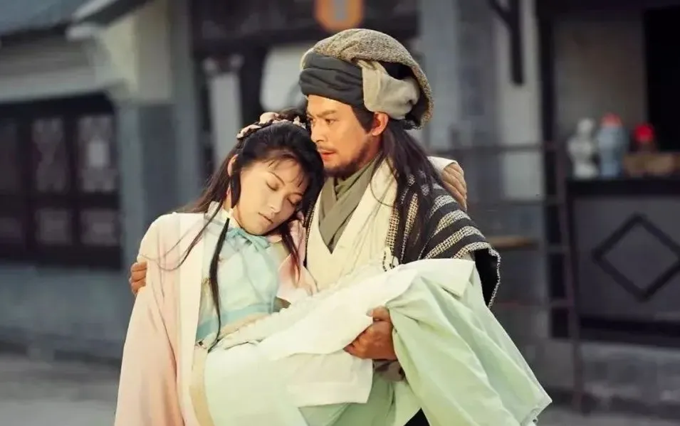

7月3号的下午，作家倪匡去世。
关于倪匡，绝大多数人的记忆是从《卫斯理》系列、《今夜不设防》、或者《精武门》和《流星蝴蝶剑》开始的。
但我不然，我第一次对倪匡这个名字产生印象是源自一个很小的巧合，也正因此，有了今天这篇不算悼文的悼文。
一 . 萧峰大侠
没读过多少书，也没听过多少文学理论和文学批评的人在某种程度上是幸运的，因为他们更容易接受作者的"摆布"，更自然地走入作者安排的视角，欣赏作者有意布置的风景。我小时候读《天龙八部》就是这样，从那个豪迈的大侠乔峰第一次在松鹤楼头和段公子斗酒开始，我就不自主地代入了他的视角。
金庸写书一贯是这样设置悬念的，《鹿鼎记》里写陈近南出场，洋洋洒洒千字不提陈近南，反而描写韦小宝眼里看到的天地会为了迎接陈近南而做的层层准备。等到读者代入了韦小宝，感慨于陈近南架子大，声势盛的时候，读者被请进陈近南的屋子，却只看到一句：一个文士打扮的中年书生。
《天龙八部》也是这样让乔峰出场的，只不过比《鹿鼎记》里陈近南出场的线埋的更长更深——从段誉被鸠摩智掳到燕子坞开始，金庸就把笔墨毫不吝啬地放在参合庄的每一个人身上，慕容复的丫鬟阿朱、阿碧美貌温柔，聪明机敏；慕容复的姑妈性子狠辣，附庸风雅；慕容复的表妹貌若天仙，让段誉魂牵梦萦；就连慕容复姑妈府上，一个剁"花肥"的婆子都有名有姓，机警能干。
参合庄不愧是江南名庄，慕容氏不愧是武林豪族，可就在所有这些铺垫都到位了，慕容氏的声势到了极处的时候——金庸只一句"南慕容，北乔峰"，就把一切的好奇、羡慕、钦佩，统统转到了那个孤零零地坐在松鹤楼头饮酒的大汉身上，我就是这样，把自己代入乔峰的。
我悔不该代入乔峰。杏子林中，商略平生义。一个豪迈的大侠，居然被一群各怀鬼胎的小人逼到那步田地，有口难言，有情难宣，当年我不理解乔峰的自辩那么苍白无力，可后来我明白，乔峰不是不能为自己辩白，而是在他心里事情总有水落石出的一天，多说无益，只有离开。
只有相信正义和真理的人才会做出乔峰那样的选择——我查清楚一切，真相自然大白。等到后来马夫人谋杀段正淳的那个夜晚，乔峰听到那些被他当做兄弟的人为了保全丐帮的名声，不惜罔顾真相，污蔑乔峰的时候，他才第一次产生了站出来辩白的冲动，因为他明白，真相没用了，正义是不存在的。可他又站住了，那才是真的悲凉。
杏子林、聚贤庄、少林寺、天台山、单家，一次又一次陷害，一次又一次侮辱，最后天地茫茫，一个浑身正气的大好男儿竟然找不到一个容身之地！连乔峰自己也慢慢相信了自己的身世，可真正的同胞远在千里之外，身边的宋人个个把自己视作仇寇，全世界能说真心话的人，竟只剩下了一个阿朱。
"是了！从今而后，萧某不再是孤孤单单、给人轻蔑鄙视的胡虏贱种，这世上至少有一个人.......有一个人......."
"有一个人敬重你、钦佩你、感激你，愿意永永远远、生生世世、陪在你身边，和你一同抵受患难屈辱、艰险困苦。"
萧峰爱上阿朱的时候，也是读者爱上阿朱的时候。
所以阿朱被萧峰一掌击死的那个晚上，当时还小的我真心实意地觉得这一定还有转机，觉得这不过是金庸给萧峰开的一个玩笑。阿朱下葬的时候，是我读金庸十余年唯二痛恨金庸的时刻——另一次是他让小龙女答应跟着杨过离开古墓。
二 . 阿紫姑娘
如果不是阿紫，阿朱就不会知道自己其实也是段正淳的女儿，这是一个最朴素、最单纯、纯粹基于阅读兴趣而不带有任何文学批判眼光的年轻读者脑海中的第一反应。更何况在阿朱死的时候，阿紫还在旁边哭闹，怨怼着那个已经自责和悲痛到了极点的读者——阿紫从顽劣到奸恶的形象转变，就是从此刻开始的。
阿朱死了，还冒出来个讨厌的阿紫，一直跟着孤独悲凉的萧峰，这个阿紫性情乖张、行事狠辣，客观地说，金庸对她下手实在也太狠，《射雕》里的瑛姑和梅超风、《神雕》里的李莫愁和郭芙、《倚天》里的周芷若，哪怕《鹿鼎记》里面的阿珂，甚或干脆是公认不讨喜的袁紫衣，起码都还有让人欣赏或者让人怜惜的地方，唯独是这个阿紫，金庸把这个人物生生写上了绝路——浑身上下，简直没一点好处。
后来很多年，我一直在反复咀嚼当年第一遍读到阿紫时的心情和感受，那是怎样的一种厌恶呢，为何如此深刻，却为何好像没有来由。
论下手狠辣，梅超风纵横江湖，杀人无算；论心肠歹毒，周芷若设下重重疑阵，把赵敏抛入大海，把殷离毁容害死，盗取九阴真经；论性情乖张，郭芙刀斩杨过一臂，引诱武氏兄弟为了自己而大打出手。有的是豪门出身的富家小姐，有的是成名多年的江湖豪杰，金庸小说里比阿紫坏的人数不胜数，可为什么偏偏是阿紫，读起来岂止是痛恨，简直是恶心——明明杀死阿朱的是萧峰自己，明明阿紫深爱萧峰，可为什么，我还是讨厌阿紫？
好些年以后，我想过很多种假设以后，我才逐渐明白过来。我讨厌阿紫不是因为她坏，而恰恰是因为她好，恰恰是因为她喜欢萧峰。
假如她只是恶毒，《天龙八部》里明面上有四大恶人坐镇，暗地里还埋伏着带头大哥，抛开这些不谈，江湖里还散落着段正淳这个天下第一渣男和马夫人这个天下第一毒妇，哪里轮得到讨厌一个小小的阿紫了。
可她偏偏不是一视同仁的坏，她只对游坦之狠、对丁春秋滑，可她对萧峰始终是真心实意，始终是言听计从。而且她偏偏还是阿朱的亲妹妹，就连萧峰也有几次恍惚间把她认作阿朱，在辽人的部落里养伤以后，萧峰感觉她连性格也变得像阿朱了。更重要的，她千不该万不该，偏偏受了伤要萧峰照顾，像极了当年被打伤的阿朱，还偏偏跟着萧峰到了那片草原，那片属于阿朱的草原。
塞上牛羊空许约，我是给阿朱姑娘许了约的啊，我萧峰亲手打死阿朱，活该在草原上孤单寂寞一辈子，可是又从哪冒出来一个和阿朱一模一样的阿紫，你越是模仿她，就越是让我厌恶！
《论语》所谓"恶紫，以其乱朱也。"那一刻，我才明白金庸先生在这对姐妹名字里埋藏的深意。
三 . 倪匡先生
也正因此，当年我读到阿紫双目为丁春秋射瞎的时候，确实是非常强烈的心头一震的——那一震里既有出了一口恶气的痛快，又不知从何而来的突然一阵愧疚和悲伤。
或许真的是熟读之后的默契，当年的我产生了一种强烈的直觉——这刺瞎阿紫双目的毒针，爽快的不像是丁春秋射出来的。
是李寻欢也好，是陆小凤也好，是萧十一郎也好，总归这一针得是古龙笔下写出来的，金庸绝不会干脆利落的让读者和萧峰、阿紫一起以这样的方式获得解脱，他一定还要让阿紫纠缠萧峰，纠缠到读者终于忍无可忍为止，金庸是最擅长在读者情绪的边缘走钢丝的，是最擅长在这样的无休止的纠缠和折磨中一步一步把剧情推向高潮的，他不会弄瞎阿紫，我确信。
所以我当时在浏览器里搜索，"为什么金庸要弄瞎阿紫"，出现的结果，是一个叫倪匡的名字。
那年《天龙八部》正在连载，金庸有事去欧洲不得不断更，就拜托倪匡代他写几章，当时董千里也在场，金庸特意叮嘱：不必照原来的情节，你可以去自由发展。还叮嘱倪匡：写好后请老董（董千里）看一遍，改过之后再见报。
倪匡一点也不以为忤，反而很高兴，认为自己能替金庸代写是极光彩的事情，据他自己回忆，当时是"思想负担之重，一时无两，战战兢兢，写了六万字左右"，可偏偏是这六万字，丁春秋一针刺瞎了阿紫。
知我心者，倪匡先生也。从那天，我就记住了这个名字。
后来还有一些人在传什么"阿朱也是倪匡写死的"，到今天我还看到有的公众号在悼念倪匡先生的文章里提到这件事，我听了当时就嗤之以鼻，一个能写瞎阿紫的人，是何其痛快，何其豪迈，怎么可能舍得让萧峰受此折磨。
几年前倪匡先生开通了微博，在微博下面有后来的读者问他"阿朱是不是你写死的"，他本人还叫了屈："六月下雪了！阿朱的死和我一点关系都没有，人真不能做坏事，做了一桩，全世界的坏事就都是你做的了！"
其实倪匡代写的部分，几乎只出现在了当年的连载版里，金庸不仅在连载版里让虚竹以近乎儿戏的方式治好了阿紫的眼睛，还在修订版里把绝大部分倪匡代笔的段落都删除了，仅剩阿紫失明一节因为牵扯太多而无法删除，可就是这一节，已足够让读者看出文字背后藏着一个和金庸的风格完全不同的人。
如果说创造金庸武侠世界的金庸本人是个敦厚的儒者，那倪匡，就真正是那个世界里潇洒的侠客。
从那以后，我读了倪匡的不少小说和评论，还看了他和蔡澜、黄霑合办的节目《今夜不设防》，当年在那个节目上，香港四大才子里的三张名嘴一起出现，那时候张国荣还在节目上和他们侃侃而谈，四大才子也还年轻。黄霑是在04年去世的，我对他的印象不多；18年金庸先生去世，我一下子感觉空落落的，过了一会眼里突然就含上了泪水。
2022年7月3号，倪匡先生去世。听到这个消息我却出乎意料的平静，我只是猛然想起当年倪匡曾给自己提前写下的那句墓志铭："多想我生前好处，莫想我死后坏处。"
于我而言，最好的铭记，就是记住那枚迎面飞来的毒针。
倪匡先生，一路走好。